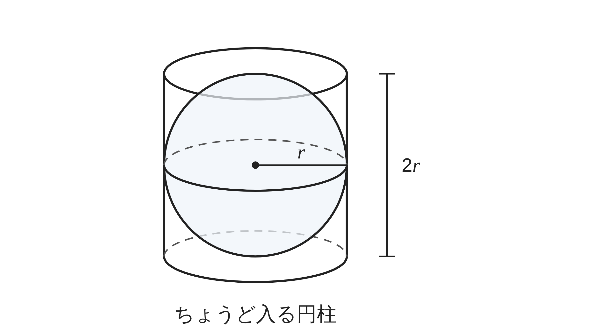
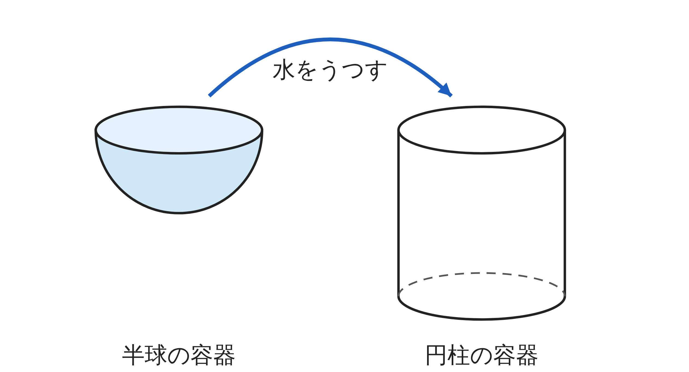
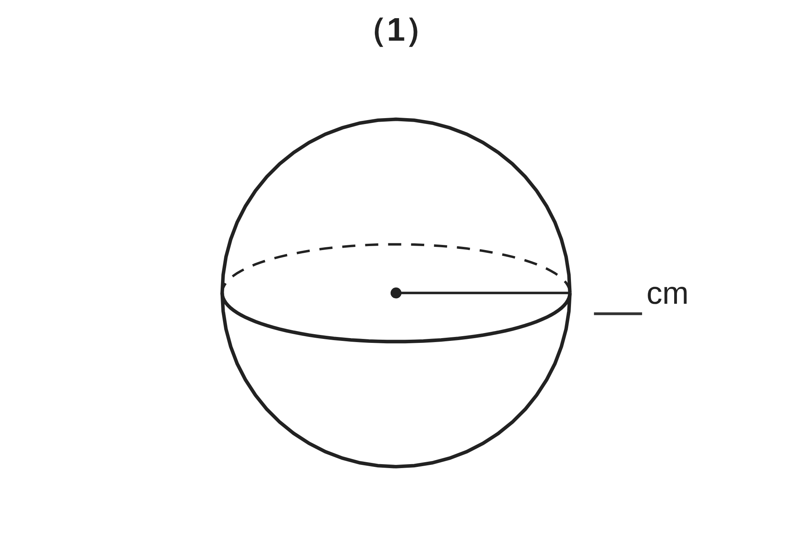
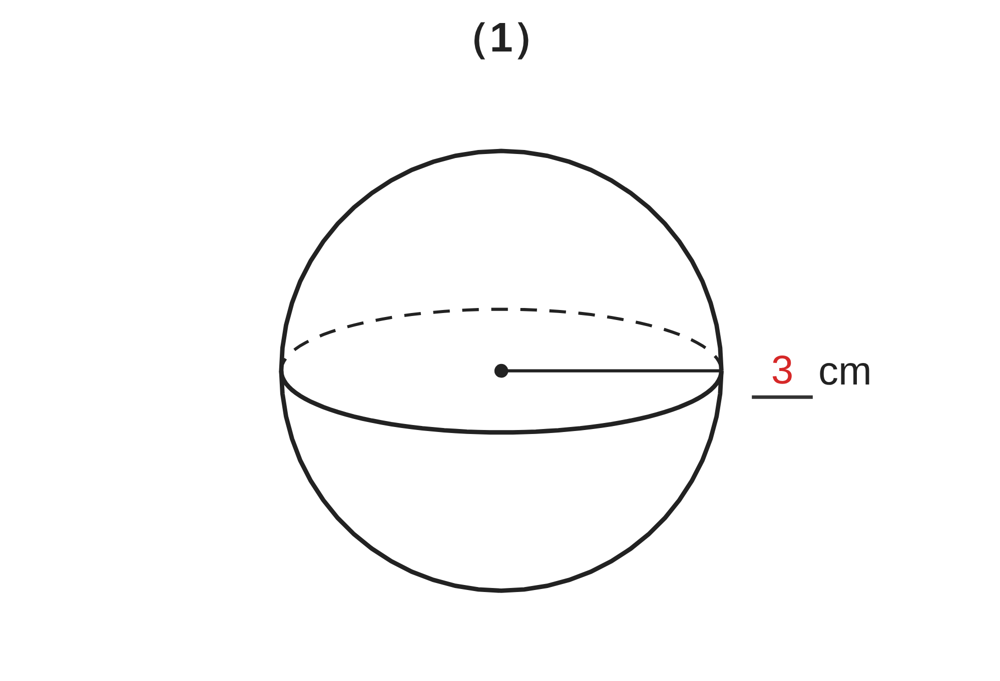

ペア学習
第12時 球の表面積と体積を求めよう
第11時の重要語句を、1人1問ずつ出題し合う。
言葉の意味を、自分の言葉で言おう。
錐体
柱体
底面積
高さ
垂線
体積
空間図形 第12時 球の表面積と体積を求めよう
めあて
第12時 球の表面積と体積を求めよう
学習課題
半径 r の球が、ちょうど入る円柱
（底面の半径 r、高さ 2r）がある。
球の体積は、この円柱の体積の、何分のいくつだろう。


【予想】何分のいくつだと思うか。わけも書こう。
空間図形 第12時 球の表面積と体積を求めよう
学習課題のまとめ
第12時 球の表面積と体積を求めよう
球の体積は、この円柱の体積の、何分のいくつだろう。
予想 … 1⁄2？ 2⁄3？ 3⁄4？
実験 … 半球の容器 3ばいで、円柱がいっぱいになる
球は半球 2つ分だから、円柱の 2⁄3
式 … 2πr³×2⁄3＝4⁄3πr³
空間図形 第12時 球の表面積と体積を求めよう
ことば
第12時 球の表面積と体積を求めよう
① 球の体積は、ちょうど入る円柱の体積の （円柱の体積は 2πr³）
② 半径 r の球の体積 V＝
③ 球の表面積は、ちょうど入る円柱の に等しい（4πr²）
④ 半径 r の球の表面積 S＝
空間図形 第12時 球の表面積と体積を求めよう
ことば
第12時 球の表面積と体積を求めよう
① 球の体積は、ちょうど入る円柱の体積の 2⁄3（円柱の体積は 2πr³）
② 半径 r の球の体積 V＝4⁄3πr³
③ 球の表面積は、ちょうど入る円柱の側面積に等しい（4πr²）
④ 半径 r の球の表面積 S＝4πr²
空間図形 第12時 球の表面積と体積を求めよう
例題
第12時 球の表面積と体積を求めよう
次の球の、表面積と体積を求めよう。
（1）半径が cm の球
（2）直径が cm の球
直径がわかっているときは、r に
何を入れるだろう。

空間図形 第12時 球の表面積と体積を求めよう
例題 解答
第12時 球の表面積と体積を求めよう
（1）表面積 4π×3²＝36π（cm²）
体積 4⁄3π×3³＝36π（cm³）
（2）半径は 10÷2＝5（cm）
表面積 4π×5²＝100π（cm²）
体積 4⁄3π×5³＝500⁄3π（cm³）

空間図形 第12時 球の表面積と体積を求めよう
考えよう
第12時 球の表面積と体積を求めよう
①
半径 6cm、9cm の球の、表面積と体積を
求めて、表を完成させよう。
②
表を見て、気づいたこと
③
「表面積と体積は等しい」といって
よいだろうか。理由も書こう。
| 半径 | 3cm | 6cm | 9cm |
|---|---|---|---|
| 表面積（cm²） | 36π | ||
| 体積（cm³） | 36π |
発展
演習まで解き終わった人は、考えてみよう！
半径 r の球で、表面積と体積には、どんな関係があるだろう。
r を使って、考えよう。
空間図形 第12時 球の表面積と体積を求めよう
振り返り
第12時 球の表面積と体積を求めよう
今日のめあて
球
半径
表面積
体積
半球
側面積
今日わかったことを、ペアで1つずつ言い合おう。
ワークシートと演習プリントを出そう。（裏の発展は、解き終わった人向け）
空間図形 第12時 球の表面積と体積を求めよう